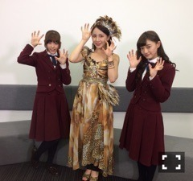

2015/0930Wedついに初日っ(o・・o)
松村沙友理です！
明日から
舞台「すべての犬は天国へ行く」
はじまりまーす
緊張するけど
たのしんでできたらいいなぁ～
よかったらきてください
来てくれないと こんな⇧顔になりまーす
でも この写真が この顔なのには
理由がありまーす
何でしょう？
では、また
2015/0929Tueうふふっ(o・・o)
松村沙友理です！
すっかり涼しくなって
みんなと 暑いのと寒いのどっちが耐えれるか
よく議論する季節になりましたね♡
みなさんはどっちですか？
今日は 生のアイドルが好き！
第３０回の放送がありましたー
見てくださった方
コメントくださった方
本当にありがとうございました！
ゲストは
GEMさんと
吉川友さんでしたー
すっごく楽しくて 久しぶりにいっぱい喋っていっぱい笑ったなと思いました！！
かなちゃんもいつもありがとう♡
お互いの生誕祭でMCをやり合ったり
うふふ♡な関係です！
実は先月の終わりに
来月 凄いことありますってボードを出したのですが
それは かなちゃんのブログを見てください！
それと
ついに１０月1日から
舞台「すべての犬は天国へ行く」が
渋谷のAiiA 2.5 Theater Tokyoにて
始まります！
１２日まで
１８公演あります！
凄く 実力のある演者さんとご一緒させて
もらうので
私たち乃木坂メンバーも頑張ってます！
凄く 面白いと思います！
お時間あれば 是非きてください！
よろしくお願いします！
2015/0929Tueラブライブっ(o・・o)
松村沙友理です！
生誕祭ありがとうございました！！
ラブライブ！仕様にして もらって
μ'sのみんなと 握手をしている気分でした！
まいやんと かなちゃんに手紙を読んで
もらって 涙がちょちょぎれました(T_T)
嬉しかった(T_T)
いっぱい 時間かけて準備してくれたんだな～と
思うと 母も凄く喜んでました(T_T)
実は、月曜日のMJで
μ'sさんにお会いしましたー
最近、ラブライブ！過ぎて嬉しいー
本当に皆さんありがとうございます！
2015/0922Tue言葉の棘っ(o・・o)
松村沙友理です！
前回の握手会
体調不良で欠席してしまいすみませんでした。
あの日は 朝から朦朧としていて
翌日 気がついたら 病院にいました。
自分でも 何が起こったのか わかりませんが
過労で倒れたみたいです(T_T)
生誕祭の準備もして下さっていたみたいで
すみません(T_T)
起きてから マネージャーさんに
めっちゃ飾ってくれていたよーとお聞きしました(T_T)
まいちゃんやまなったんの生誕祭もみたかったです(T_T)
新曲の制作も 舞台稽古もあり
毎日 なんとかやっています(T_T)
特に 舞台チームのメンバーには 精神的にも支えてもらってる気がして
みんなも 大変なんだから！と私も自分を
奮い立たせています(T_T)
母も心配して 大阪から来てくれていて ご飯作ってくれてるし
マネージャーさんも 私の体調を凄く気遣ってくれているので
皆さん 心配しないでください(T_T)
本当にすみません(T_T)
明日の握手会よろしくお願いします(T_T)
溜まっていたアニメを 観ようと思って
アイドルマスター シンデレラガールズの２３話を観たら しまむーが 大変なことになっていて
凄く 心を揺さぶられて卯月と一緒に泣きました(T_T)
銀魂は 銀さんと土方が入れ替わってるけど
目が生きてる銀さんが よいです、、、
そして ついに
９月１９日公開の映画
「心が叫びたがってるんだ。」を観ました！！
ずっと 観たいみたいと言い続けて
やっと観れました！！
岡田さんの脚本に泣かされ
田中さんのキャラの可愛さに魅了され
長井さんの見せ方に驚かされました！
特に 主人公の順ちゃんの母の気持ちにグッときたし
順ちゃんの たくみに見せた表情が
可愛すぎて キュンとして
声のかわりに 気持ちを伝えるメールの演出が
アニメでは 新鮮だなと感じました！！！
アニメを普段みない メンバーの子も
みんな 感動していて面白かったと言っていたので 本当に どんな方にも受け入れられる作品なんだなと思いました(T_T)
最後 「今、話したい誰かがいる」
が流れた時
嬉しくて 涙が出ました(T_T)
ぜひ、劇場で この感動を感じてもらいたいです！
では！！
2015/09/22 00:06｜個別ページ｜コメント(1196)
2015/0901Tueもうすでにっ(o・・o)
松村沙友理です！
真夏の全国ツアー2015
全公演 終了しましたー！！
もう9月だー！！
仙台 名古屋 広島 福岡 大阪 東京
来てくださった皆様ありがとうございました！
スカパー！を見てくださった皆様も
ありがとうございました！
全国各地いろんなことが ありました。
仙台で食べた牛タンが美味しすぎて
お取り寄せまでしました。
名古屋は 調子にのって 頼み過ぎた手羽先を
全部 完食してしまいました。
広島は いくちゃんが６個食べたオニギリ
体調が悪くて２個しか食べれませんでした。
福岡は ずっと麺をすすっていました。
大阪は 何故か 家族で馬肉を食べていました。
東京、、、。
差し入れが沢山あって ケータリング置き場と楽屋を ずっと往復していました。
１日目の広島公演はお休みしてしまい
申し訳ありませんでした。
大阪公演で誕生日を祝って頂きありがとうございました。
ツアーの合間もドラマの撮影があり
ツアーには ベマーズコーナーもあって
毎日 ユウウツたんになっていたのに
もう あのユニフォームを着ないのかと思うと
寂しいです。
ちなみに、 コンビニのコピー機で買えるブロマイド ユウウツたんを自分で買いました。
皆さんもよかったら買ってねー
めっちゃ簡単でしたー( ´ ▽ ` )ﾉ
夏が終われば秋がきて
寂しさを感じてる余裕もないくらい
次が待っています。
１３枚目シングル「今、話したい誰かがいる」
この曲が 映画 「心が叫びたがってるんだ。」の主題歌に選ばれました。
あの花も大好きで アニメは三回は繰り返してみたし
映画も劇場に一人で観に行ったし
じんたんＴシャツも 沢山持っています
地底人と 白ネギと光速と自由かな。
本当に大好きな作品の スタッフさんの
作品なので 凄く嬉しいし不安も大きいです。
けど、私も あの花を通して
Galileo Galileiさんが好きになったので
一人でも私みたいに この作品から好きになってもらえたら、、、。
そして ここさけの世界観を崩すことなく
あの素敵な世界に寄り添える曲になったらいいなと思っています。
映画は2015年９月１９日に
全国ロードショーなので
ぜひ 劇場に足を運んでいただきたいです(T_T)
最後に この夏がどれほど素敵だったかを
物語っていると 私が勝手に感じてる写真はります。
神宮での MCでやった
まっちゅんのやりたいこと！第三弾の写真です
最高の夏の想い出をありがとうございました。
2015/09/01 23:54｜個別ページ｜コメント(1474)